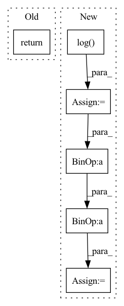

Pattern ID :1462

Before Change
def forward(self, logits, samples, soft):
if samples is None:
return self.gumbel_softmax(logits, self._temperature, self._eps, hard=True)
else:
return -torch.sum(-samples * F.log_softmax(logits, -1), -1)
After Change
class GumbelSoftmax(nn.Module):
def forward(self, logits: torch.Tensor, tau: float = 1, hard: bool = False, dim: int = -1):
gumbels = -torch.empty_like(logits, memory_format=torch.legacy_contiguous_format).exponential_().log() // ~Gumbel(0,1)
gumbels = (logits + gumbels) / tau // ~Gumbel(logits,tau)
y_soft = gumbels.softmax(dim)
if hard:
// Straight through.
index = y_soft.max(dim, keepdim=True)[1]
y_hard = torch.zeros_like(logits, memory_format=torch.legacy_contiguous_format).scatter_(dim, index, 1.0)
ret = y_hard - y_soft.detach() + y_soft
else:
// Reparametrization trick.
ret = y_soft
In pattern: SUPERPATTERN
Frequency: 3
Non-data size: 6
Instances
Fragment ID: 4993100
Project Name: xiaosu-zhu/mcquic
Commit Name: e12be331e275549e5b8a7ef6a7c8dbf6d4e387bf
Time: 2021-04-08
Author: xiaosu.zhu@outlook.com
File Name: src/mcqc/layers/gumbelSoftmax.py
M Class Name: GumbelSoftmax
N Class Name: GumbelSoftmax
M Method Name: forward(5)
N Method Name: forward(4)
M Parent Class: nn.Module
N Parent Class: nn.Module
M File Name: src/mcqc/layers/gumbelSoftmax.py
N File Name: src/mcqc/layers/gumbelSoftmax.py
M Start Line: 40
M End Line: 44
N Start Line: 8
N End Line: 21
'>
Before Change
super(ActionDecoder, self).__init__()
def forward(self, x):
return x
class RewardDecoder(nn.Module):
After Change
self.model = nn.Sequential(*self.layers)
def forward(self, x):
raw_init_std = np.log(np.exp(self.init_std) - 1)
x = self.model(x)
mean, std = torch.chunk(x, 2, dim=-1)
mean = self.mean_scale * torch.tanh(mean / self.mean_scale)
std = self.softplus(std + raw_init_std) + self.min_std
dist = td.Normal(mean, std)
transforms = [TanhBijector()]
dist = td.transformed_distribution.TransformedDistribution(
dist, transforms)
dist = td.Independent(dist, 1)
return dist
'>
Fragment ID: 4992991
Project Name: chamorajg/pl-dreamer
Commit Name: 76fdde73106a7f1aade5a0b5254668f2acd6c439
Time: 2021-08-04
Author: chanduiyer.raja@gmail.com
File Name: planet.py
M Class Name: ActionDecoder
N Class Name: ActionDecoder
M Method Name: forward(2)
N Method Name: forward(2)
M Parent Class: nn.Module
N Parent Class: nn.Module
M File Name: planet.py
N File Name: planet.py
M Start Line: 101
M End Line: 101
N Start Line: 158
N End Line: 168
'>
Before Change
src = torch.ones_like(label.unsqueeze(1), dtype=inp.dtype, device=inp.device) - self.m
sigma.scatter_(dim=1, index=label.unsqueeze(1), src=src)
return self.loss(a * (inp - sigma) * self.gamma, label)
if __name__ == "__main__":
After Change
logit_p = ap * (sp - sigma_p) * self.gamma
logit_n = an * (sn - sigma_n) * self.gamma
loss = torch.log(1 + torch.clamp_max(torch.exp(logit_n).sum() * torch.exp(- logit_p).sum(), max=1e38))
z = - torch.exp(- loss) + 1
sp.backward(gradient=z * ap * torch.softmax(logit_p, dim=0))
sn.backward(gradient=z * an * torch.softmax(logit_n, dim=0))
'>
Fragment ID: 4992837
Project Name: tinyzeamays/circleloss
Commit Name: 9c909ec6274b1c9c139a62f9f84ecf91c5edee35
Time: 2020-04-03
Author: 1049793129@qq.com
File Name: circle_loss.py
M Class Name: CircleLoss
N Class Name: CircleLossBackward
M Method Name: forward(3)
N Method Name: forward(3)
M Parent Class: nn.Module
N Parent Class: nn.Module
M File Name: circle_loss.py
N File Name: circle_loss.py
M Start Line: 23
M End Line: 34
N Start Line: 43
N End Line: 58